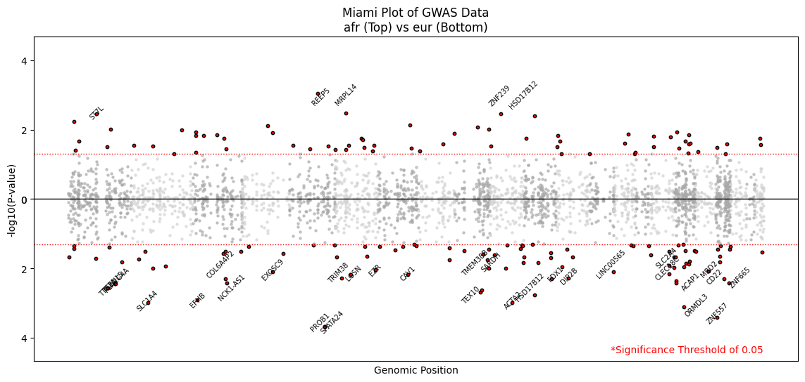
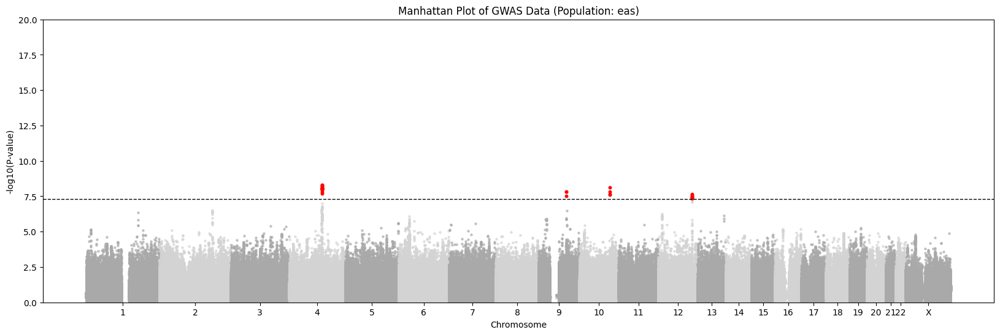
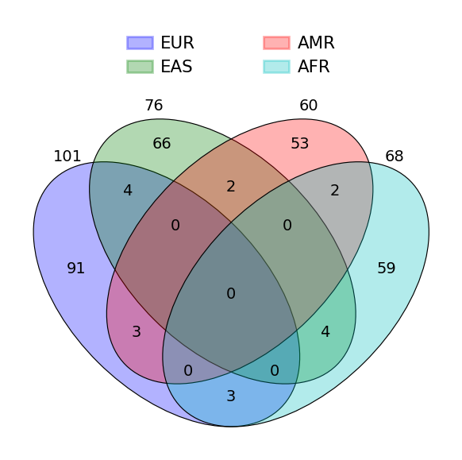
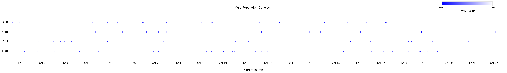
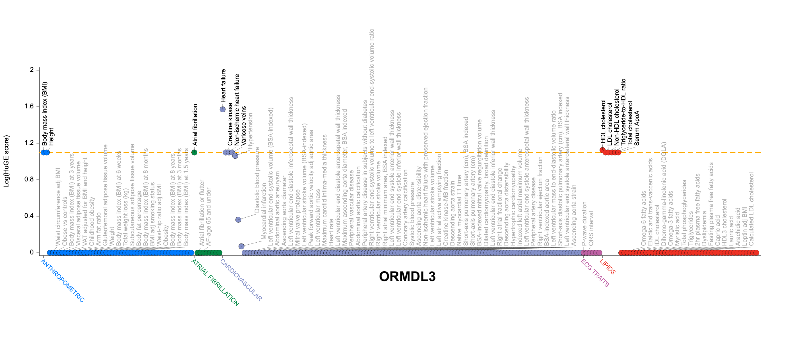
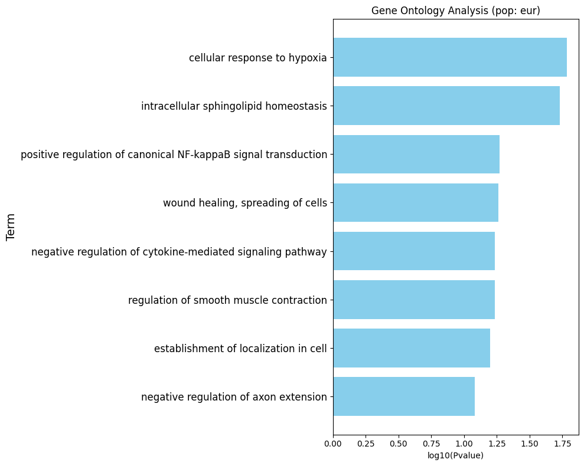
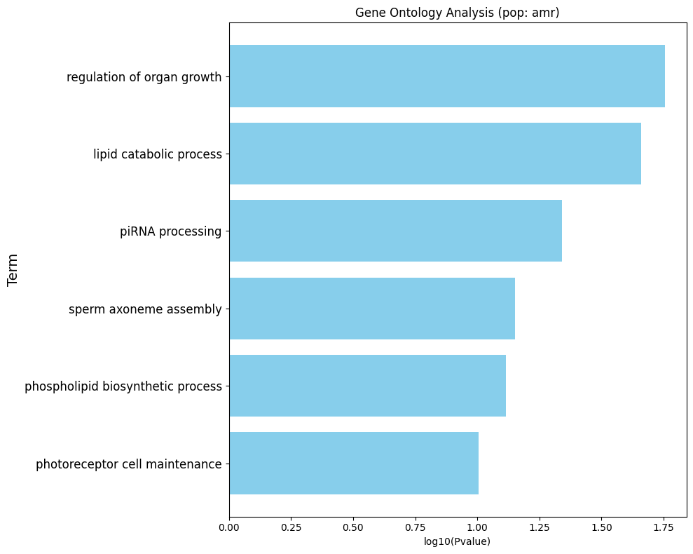

Intro
While scientists have made progress in improving polygenic risk scores (PRS) for different populations, most studies rely on simulated data rather than real-world genetic information. This is because researchers have limited access to large genetic datasets that include diverse ancestry groups. Additionally, most studies focus on overall PRS accuracy across the entire genome rather than looking at specific genes that may behave differently in different populations.
Our study aims to provide gene-level insights into ancestry-specific gene-disease associations, with a focus on heart failure. Unlike common conditions like diabetes or schizophrenia, heart failure is understudied. It is complex and varies across populations, making it a good disease for testing PRS accuracy. To thoroughly understand why PRS accuracy varies across populations, we computed gene expression prediction weights using publicly available European-ancestry gene expression data. We then applied these prediction weights to GWAS summary statistics for heart failure across different populations. This allowed us to analyze gene-disease associations using FUSION, a transcriptome-wide association study (TWAS) framework.
By comparing gene-disease associations across ancestry populations, we were able to identify specific genes where PRS predictions for heart failure may be biased due to population-specific genetic architecture. Our findings provide functional insights into PRS transferability, helping to explain how genetic regulation of disease-related genes differs across ancestries.
Data
Our analysis is based on two main types of genetic data:
European SNP Training Data
- Source: 1000 Genomes Project
- Includes:
- LDREF genotype data
- Corresponding gene expression data
- Data Descriptions
- LDREF genotype data
- SNPs are filtered through pruning and thresholding.
- Before filtering:
- 489 individuals
- 1,190,321 SNPs across 22 chromosomes
- After filtering:
- 343 individuals remained
- 145,335 significant SNPs
- SNPs are filtered through pruning and thresholding.
- Gene expression data
- Covers 23,722 genes
- 343 individuals had both genetic and expression data
- LDREF genotype data
- In addition to the filterings done above, principal component analysis was also performed.
To reduce the impacts of potential multi-collinearity, principal component analysis is applied to reduce the dimensionality of the genotype data.
GWAS Data for Cardiovascular Disease
This dataset focuses on heart failure and includes genetic information from different population groups. Each SNP has a p-value, showing how strongly it is linked to heart failure. The total number of SNPs varies based on the size of each population group.
- Populations and corresponding number of SNPs:
Population Number of SNPs American 5,761,787 East Asian 8,121,472 African 16,745,089 European 21,705,455 - Source: Global Biobank Meta-analysis Initiative (GBMI)
- Purpose:
- To identify genetic risk factors for heart failure
- To improve statistical power to detect meaningful genetic associations
Methods

Compute SNP weights
Association Testing
Cross-Population Gene Association Analysis
Results






Gene Ontology Enrichment Analysis (European)

Gene Ontology Enrichment Analysis (American)